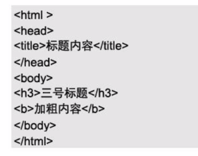
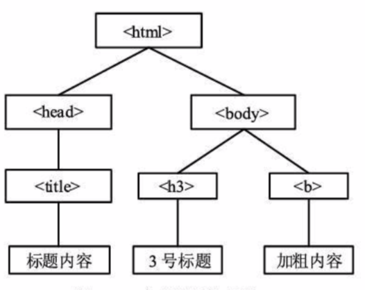
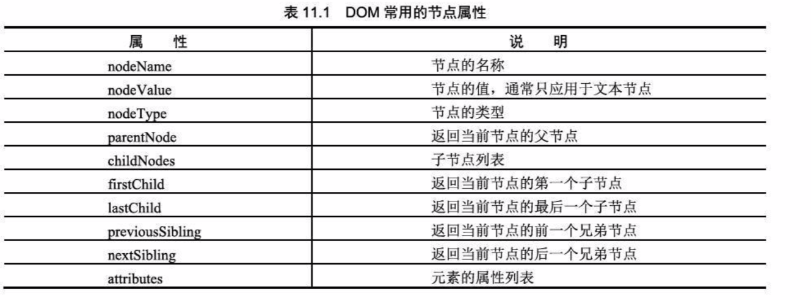

11.1、DOM对象概述
DOM是Document Object Model的缩写；
Document:创建网页并将该网页添加到web中，DOM就会根据这个网页创建一个文档；如果没有document，DOM也就无从谈起！
Object: 对象是一种独立的数据集合。
Model:模型代表将文档对象表示稳树状模型。在这个树状模型中，网页中的各个元素与内容表现为一个个相互连接的节点！
DOM是访问和操作Web页面的接口，使用该接口可以访问页面中的其他标准组件。
DOM可以访问站点中的数据、脚本和表现层对象。


11.1.1、DOM分层：
文档对象模型采用的分层结构为树形结构，以树节点的方式表示文档中的各种内容。
DOM中的每一个对象都可以称为一个节点(node)。
根节点：在最顶层的 html 节点，称为根节点。
父节点：一个节点之上的节点称为该节点的父节点(html称为body的父节点)。
子节点：一个节点之下的节点称为子节点(body称为html的子节点)。
兄弟节点：多个节点在同一个层次，并拥有相同的父节点称为兄弟节点(body和head称为兄弟节点)。
后代：一个节点的子节点的集合称为该节点的后代（body和head称为html的后代；）
叶子节点：在树形结构的最底部的节点称为叶子节点。(标题内容、3号标题、加粗内容称为叶子节点)
DOM中的所有节点可以分为一下三种类型：
元素节点：body、p、a等一系列标记是这个文档的元素节点；元素节点组成了这个文档的语义逻辑结构！
文本节点：包含在元素节点中的内容部分，如p标记的文本等
属性节点：元素节点的属性，如a标记的href属性与title属性等；一般属性节点都是隐藏在浏览器背后，并且是不可见的；属性节点总是被包含在元素节点中；
11.1.2、DOM级别:W3C制定的DOM第一级和第二级；
11.2、DOM对象节点属性
在DOM中通过使用节点属性可以查询出各节点的名称、类型、节点值、子节点和兄弟节点等；

11.2.1、访问指定节点：
使用getElementById()方法来访问指定id的节点，并用nodeName属性、nodeType和nodeValue
属性来分别获取出该节点的名称、节点类型和节点的值（除文本节点类型外，其他类型的节点的值都为null）；
我只是一个DOM测试的标签，不要意外！
设置标签的name属性，可以直接使用document.name(的值)获取节点对象,如document.write(document.xxImg.nodeName)
11.3、DOM节点
11.3.1、创建节点
1、创建新节点
创建新的节点先通过createElement()和createTextNode()方法，生成一个新的元素，并生成文本节点，再通过使用appendChild()方法将创建的新节点添加到当前节点的末尾处；
2、创建多个节点(使用循环语句)
注意：document.appendChild(node)方法在每一次添加新的节点时都会刷新页面，会使
浏览器显得十分缓慢。这里可以使用createDocumentFragment()方法来解决这个问题
11.3.2、插入节点insertBefore(new,ref):将新的子节点添加到当前节点的末尾；
在我前面插入一个节点！
11.3.3、复制节点cloneNode(Boolean:表示是否为深度复制)
true：深度复制，将当前节点的所有子节点全部复制；
false：简单复制，只复制当前节点，不复制其子节点；
下面演示一下：深度复制与简单复制
11.3.4、删除和替换节点
1、删除节点removeChild(node):删除一个子节点；
2、替换节点replaceChild(new,old):新节点替换旧节点
替换节点
我是旧节点
11.4、获取文档中的指定元素
11.4.1、通过元素的id属性获取元素（document.getElementById('id')）
11.4.2、通过元素的name属性获取元素（document.getElementsByName('id')得到一个数组，根据下标获取元素）
11.5、与DHTML相对应的DOM
innerHTML被多数浏览器所支持，innerText、outerHTML和outerText只有IE浏览器支持（错误）；
innerHTML声明的是元素含有的HTML文本；不包括开始和结束标记，包含样式、文本内容以及其他属性等；
innerText只能声明元素包含的文本内容；
outerHTML:包含的是整个元素的所有内容，包含起始终止标记；
outerText:与innerText相同；